Copyright © 2022-2026 Originator Profile Collaborative Innovation Partnership (OP-CIP), All rights reserved.
本文書は参考訳である。規範となるのは 英語版であり、 本日本語版と英語版とで内容が食い違う場合は英語版が優先する。
本文書は Originator Profile Framework (OPF) のアーキテクチャの概観を 与える。デジタルメディアと広告のエコシステム、そして電子メールにおいて、この枠組みは コンテンツの受け手に 2 つのものを与える。一つは、コンテンツの originator に関する豊富で検証可能な情報であり、これが Originator Profile (OP)、 すなわち originator について validate された属性の集合である。もう一つは attribution、すなわちコンテンツをその originator に検証可能に結びつける ことである。本文書は、 コンテンツの originator のプロファイルを検証可能にする主要な概念、 データモデル、運用プロセス、ガバナンスモデルを紹介する。そのような プロファイルは、第三者が validate した originator の属性から組み立て られる。本概観には、 C2PA との比較、現在のユースケース、そこから抽出した要件も 含まれる。本文書は主に、技術的な読者と技術に詳しいエンドユーザが Originator Profile Framework の設計を理解するためのものである。
本日本語版は参考訳である。英語版から AI 支援で作成したものであり、規範となるのは英語版で ある。齟齬があれば英語版が優先する。用語は英語のまま残している。
本文書は、Originator Profile Collaborative Innovation Partnership (OP-CIP) が開発した Originator Profile Framework (OPF) の現在の設計を 記述したものである。本文書は DRAFT の段階にあり、いかなる公式な位置づけ も持たず、OP-CIP メンバーシップの合意を表すものでもない。
今日、私たちは受け取る情報が正当なものかどうかを判断する必要に迫られて いる。偽情報や誤情報は、主として正当な組織を装う不正な website を 通じて拡散する。広告のエコシステムでは、メディアが自らの website に不正な 広告を意図せず表示してしまい、その広告と結びつけられることで評判を損ねる。 逆に、広告主は自らの広告が不正な website に掲載されていることに気づかず、 不正なサイトと結びつけられることでブランドの評判を損ねる。したがってこの 状況は、読者だけでなく、すべての stakeholder に害を与える。
では、このエコシステムにおいて行儀のよい stakeholder は何を期待するの だろうか。読者の観点からは、メディアは自らが名乗るとおりのものであるべきで あり、メディアが届けるものは合理的に信頼できるべきである。少なくともメディアは、意図したとおりに情報を正確に読者へ 届けなければならない。読者は情報がどこから来たかを検証でき、それが どのような情報源かを理解できなければならない。何をもって正確な配信と するかについては見方が分かれる。それでも情報は、メディアが意図した とおりに、正確かつ適時に読者へ届くべきである。メディアの側は、情報が 読者へ正確に届けられることを期待する。また、自らの website に適切な 広告が表示されることも期待する。広告主は、自らの広告が適切なメディアに 表示されることを期待する。
Originator Profile Framework は、これらの期待に応えるために、主として web メディア、デジタル広告、メールのユースケースに向けて設計された技術と運用 ガイドラインの集合である。技術的に言えば、Originator Profile Framework は attribution、すなわちコンテンツをその originator に検証可能に 結びつけることを提供し、それとあわせて、コンテンツの出所に ついての検証可能なプロファイル情報を提供する。このプロファイル情報が Originator Profile である。すなわち、複数の第三者によって validate され 提供された属性を、一つのプロファイルに組み立てたものである。
いま読んでいる本文書は、Originator Profile Framework の文書群のうちの 一つである。現在、次の 2 種類の文書群が準備されている。
現在、次の文書が編まれつつある。本文書の一部も、これらの文書へ移り つつある。
Core Specification が用いる DNS resource record type は、枠組みから 独立して登録し配備できるように、Internet-Draft draft-shigeya-dns-opkey [[OPF-DNS]] で定義する。
本文書は informative である。枠組みの要件は、Core Specification、 [=Use Case Specifications=]、Operational Governance Requirements が 述べる。それらを満たすための値、サービスレベル、手順は Operations の 文書が持つ。この二つの文書は、まだ公開されていない。
Originator Profile Blueprints は、現在の実装に合わせた living document
であり、本文書は実装の詳細については OPB を参照し、その記述に依拠する。
現在の OPB が Core Specification や
[=Use Case Specification=] と異なる所は、それらの文書が主な違いを挙げて
おり、OPB をそれらに合わせる作業が進行中である。OPB は、
上記の文書群の公開後も、将来の改善提案と議論の場として残る可能性がある。
Blueprints の言語。
Blueprints は日本語で書かれ、その英語訳は AI 支援による人間の作業で
作られている。そのため、二つの版は所々で食い違いうる。いずれの版も
[[Originator Profile Blueprints]] の website で参照できる。
本文書は次の節から成る。
本文書は主に、技術的な読者と技術に詳しいエンドユーザが Originator Profile Framework の設計を理解するためのものである。
は、[=Originator Profile Framework=] の機能を簡単な絵で示している。
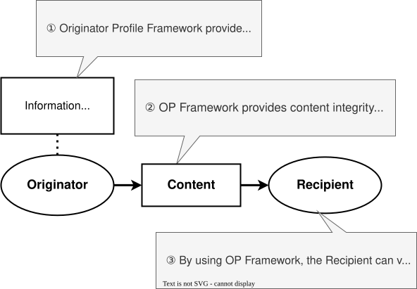
第一に、[=Originator Profile Framework=] は [=Originator=] に関する 豊富な情報、すなわち枠組みの名称の由来である [=Originator Profile=] を 提供する（①）。これは組織に関する基本的な属性だけでなく、[=Recipient=] が [=Content=] を評価するのに役立つ、複数の第三者によって validate された さまざまな属性を含む。
第二に、この枠組みは、[=Content=] の integrity を検証し、[=Content=] をその出所である [=Originator Profile=] に結びつける手段を与える（②）。
最後に、[=Content=] の [=Recipient=] は、提供された情報を用いて [=Content=] の integrity と authenticity を検証でき、また [=Originator Profile=] を参照して [=Originator=] の属性を知ることが できる（③）。
この枠組みは、さまざまなユースケースへ拡張し適応できるよう設計されて いる。[=Originator Profile=] については、複数の当事者が提供する [=Validated Attributes=] を追加できる。[=Content=] の integrity に ついては、異なる種類の serialization による異なる種類のメディアを 受け入れられるように拡張できる。たとえば [=Web Media Specific Model=] は、 web ページ内のテキスト断片やその他のメディアの保護を可能にする。
本節では、[=Originator Profile Framework=] が依拠する主要な用語と概念、 および [=Originator Profile Framework=] の文脈で用いる用語を述べる。
これらの用語と概念のいくつかはさまざまな標準や文献で定義されているが、 その記述はしばしば異なる。私たちの意図を明確にするため、ここでこれらの 用語と概念を述べる。
本文書では、Originator Profile を OP、Originator Profile Framework を OPF、Core Profile を CP、Profile Annotation を PA、Originator Profile Collaborative Innovation Partnership を OP-CIP と略す。
用語はアルファベット順に並ぶ。
これらの用語の一部は枠組みそのものの用語であり、残りは、本文書が 枠組みを記述するために用いるモデルの名である。
次の用語は Core Specification [[OPF-CORE]] が定め、web メディアの ユースケースの用語は Web Media Use Case Specification [[OPF-WEB-MEDIA]] が定める。本概観が単独で読めるよう、その定義を ここに変えずに写している。写しと定義元の文書が食い違う場合は、定義元の 文書が優先する。
[=Originator Profile Framework=] のアーキテクチャは、幅広いユースケースと 応用を支えるように設計されている。これはモジュール構成の枠組みであり、 既存のシステムやサービスへ容易に統合できる。
以降の節では、[=Originator Profile Framework=] の高水準の概念と構成要素を 紹介する。
本文書では、論文 [[A Model For Claim Validation]] で詳しく論じられて いる "Cryptographically Signed Data" に基づいて [=Signed Data=] と [=Signed Data with Policy=] を定義する。また同じ論文が示す "Certificate" の概念に基づいて [=Core Profile=] と [=Profile Annotation=] を定義する。以降の節で、定義とその含意を詳述 する。
論文 [[A Model For Claim Validation]] で用いられている用語、とくに "verify" と "validate" は、本文書で用いる用語とは異なる。同論文の著者は、 この 2 つの行為の違いを validation における文脈の欠如として述べている。 本文書では "verify" を、[=Verification Key=] を用いて [=Signed Data=] の integrity を確かめる行為の意味で用い、"validate" を、[=Entity=] 自体を 直接確認するか、政府のデータベースのような高い信頼性を持つ情報源に 照会することによって一片の情報の真実性を評価する行為の意味で用いる。 この区別は [=Originator Profile Framework=] の文脈において本質的で ある。エコシステムに関わる異なる [=Entities=] の役割と責任を明確にする 助けになるからである。 これらの語は [[vc-data-model-2.0]] の語とも異なる。そこでの validation は、ある claim が verifier の業務上の要件を満たすことを verifier が 確かめることである。ここでの [=Validate=] は issuer が文書を発行する 前に行う行為であり、[=Verify=] は [=Verifier=] の行為である。
[[A Model For Claim Validation]] における "Cryptographically Signed Data" は、originator が payload に署名し、3 つの要素、すなわち (1) verification key（またはそれへの参照）、(2) payload（attest の対象）、 (3) その鍵と payload に対するデジタル署名を束ねる概念モデルである。 この構造により、recipient は対応する verification key を用いて出所の authenticity と payload の integrity を確かめられる。
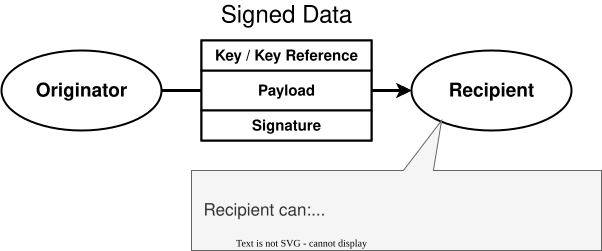
重要なことに、"Cryptographically Signed Data" だけでは payload に 符号化された claim の真実性は確立されない。確認できるのは出所の authenticity とデータの integrity だけである。ある claim が valid で あるかの判断には、追加の証拠と、validator 固有の validation policy （すなわち判断基準や意図）が必要であり、これは単なる暗号学的な verification とは別のものである。
本文書において、 [=Signed Data=] は 3 つの要素、すなわち [=Verification Key=] または それへの参照、payload、署名から成る。これにより、署名がその [=Verification Key=] に結びつけられた [=Signing Key=] によって payload に対して作られたことを検証できる。このことが payload の integrity を保証し、[=Verification Key=] はデータに署名した [=Entity=] を識別する。
[=Originator Profile Framework=] では、すべてのデータモデルが特定の ポリシーの下にある [=Signed Data=] に基づく。本文書ではこれを [=Signed Data with Policy=] と呼ぶ。[=Signed Data with Policy=] は、 あらかじめ定められ共有されたポリシーに基づいて、署名の意図と文脈を 表現する手段を与えうる。[=Signed Data with Policy=] は、digital credentials（たとえば [[vc-data-model-2.0]]）や digital certificates （たとえば [[X509V3]]）の抽象概念である。
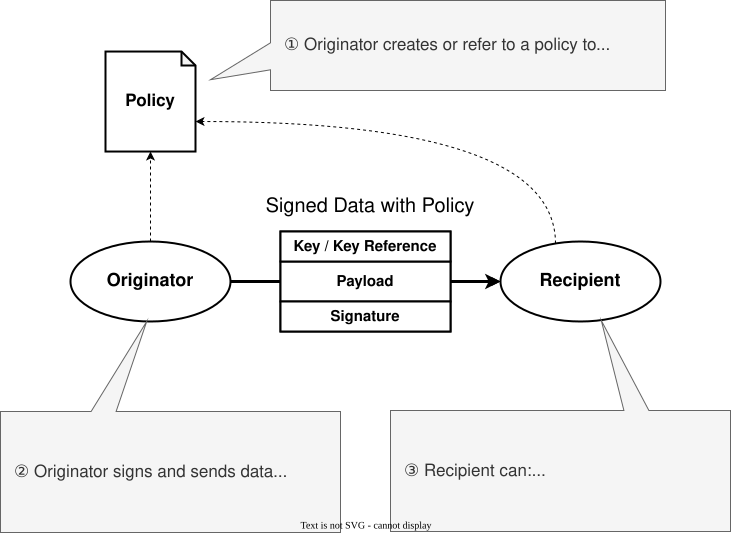
[[A Model For Claim Validation]] において著者らは、signed data with policy と関連するプロセスの関係を詳述している。"Certificate" とは、 certifier が発行する signed data の一形態であり、(i) その certifier が 特定の claim を validate したことを主張し、(ii) その validation が certifier の certification policy（その判断基準）に従うものであることを attest する。具体的には 3 つの要素、すなわち (1) certifier の verification key（またはその参照）、(2) 何が certify されたかを述べる payload、(3) その鍵と payload に対する certifier のデジタル署名を 束ねる。その署名が示そうとするのは、誰が発行したかだけではなく、 発行者が自身のポリシーに従ってその claim を certify しているという ことである。validator はそのうえで、certificate を verify し、自身の validation policy の下で certifier を信頼することによって、claim を 受け入れられる。
[=Originator Profile Framework=] の中の signed data を指すのに、 本文書では "Certificate" や "Credentials" という語を用いないように している。デジタルの文脈における "Certificate" は通常 public key certificate（たとえば [[X509V3]]）を指し、"Credentials" は claim や 属性のより広い集合を含意することが多い。しかしデジタルでない世界 では、certification と credentials をめぐる概念の多くはより流動的で 文脈依存である。この混乱は、"certification" に関する個々の デジタルでない活動との関係でとくに当てはまる。したがってこれらの語を 用いると、ここで論じている signed data の性質と範囲について誤解を 招きうる。避けているのは本文の地の文でのこれらの語であり、名前に これらの語を含む securing mechanism ではない。枠組みの文書は、 Core Specification が述べる形でそうした仕組みにより secure される。現在の形は Verifiable Credential である（）。
デジタル署名の方式を用いるときには、signer の [=Verification Key=] を 見つけ、対応する [=Signing Key=] が正しい [=Entity=] に属することを 確かめる必要がある。これを実現するために、通常は X.509 [[X509V3]] の public key certificate 方式に依拠する。この方式はさまざまな応用で広く 用いられ、よく理解されている。 しかし現在の X.509 の設計は、[=Originator Profile Framework=] の 実装が必要とする柔軟性を欠く。本節では、鍵を [=Originator=] に 結びつけ、それに属性を加える手段としての X.509 の限界を論じる。
配信の経路が既に X.509 を運んでいるところでは、X.509 は引き続き 使える。メールでは S/MIME の署名が signer の鍵を X.509 certificate に入れて運び、Email Specific Model （）は署名と certificate path を S/MIME の実装に任せ、その certificate が運ぶ鍵が [=Core Profile=] に載っている鍵であることの確認を加える。枠組みが certificate を [=Core Profile=] に埋め込まない理由は にある。
特定の応用目的のための属性を X.509 certificate に追加できる 場合でも、certificate の issuer は certificate が運ぶすべての 属性を validate しなければならない。さらに、すべての属性が一枚の certificate に載るため、 提示のために certificate を分割することも、他の issuer による certificate と組み合わせることもできない。
特定のコミュニティが、署名に用いる public key が特定のポリシー要件を満たすことを示すために、特定の目的 向けに専用の public key certificate の集合を運用するというユース ケースがある。コミュニティのポリシーを満たす certificate の このような「仮想的なリスト」を実現するには、 Certificate Authority (CA) の運用を含む certificate のツリー全体を 立てる必要があるかもしれない。そのような CA の運用には相当の作業と 複雑さが伴うため、小規模なコミュニティや専門的なユースケースでは 現実的でないことが多い。
public key certificate は、定期的またはオンデマンドの有効性確認を 要する。現在は [[OCSP]] や CRL [[RFC5280]] のようなプロトコルが 使われている。しかし、web サーバが用いる public key certificate の 範囲においてすら、OCSP はスケーラビリティ要件を満たせておらず、CRL は プライバシーの懸念をもたらす。改善についての議論はいくつかあるが、 論文 [[SoK-DR]] が論じるとおり、まだ妥当な解決はない。 大量の確認が行われる環境に向けた近年の OCSP の profile [[RFC9919]] は、応答のコストを下げる。応答はあらかじめ作られ、 nonce を持たず、クライアントと responder の間のキャッシュが保持 できるよう HTTP GET で取得され、次の更新までクライアントが保持 する。これにより一回ごとの確認は安くなり、クライアントは応答を 使い回せる。しかし、各 certificate の状態を一枚ずつその issuer に 問い合わせるという点は変わらない。[=Originator Profile Framework=] が対象とする領域の規模が負担をかけるのは、まさにこの 点である。これらの要因が、 certificate の有効期間を短くする流れを後押ししている。さらに [=Originator Profile Framework=] が対象とする領域では、はるかに多くの [=Entities=] が著しく多くの signed data を生成し、それを桁違いに 多くのクライアントが検証することを考えると、関わる規模は何桁も大きく なると見込まれる。したがって、現在の仕組みに依拠しない新しい取り組み が必要である。
[=Originator Profile Framework=] では、これらの限界に対して、より柔軟で 拡張しやすい枠組みによって取り組む。
[=Originator Profile Framework=] は、コンテンツをその originator に 結びつける attribution を提供し、同時に、 validate された属性を運ぶより柔軟で拡張しやすい方法によって、上で述べた 現在のデジタル public key certificate 方式の限界に取り組む。枠組みの中の signed data はすべて [=Signed Data from Originator=] であり、これは [=Signed Data with Policy=] の一種である。すなわちそれは、発行した当事者の ポリシーの下で、意図をもって署名されている。
[=Originator Profile Framework=] のアーキテクチャは現在、3 つのモデル群 から成る。領域に依存しないモデルである [=Base Model=]、特定の法域を 支えるために [=Base Model=] を拡張した [=Jurisdiction Specific Model=]、 そしてユースケースに固有のモデルである [=Web Media Specific Model=] と Email Specific Model である。ユースケースに固有のモデルは、それぞれ コンテンツの一つの届け方に [=Base Model=] を当てはめる。将来の応用領域 それぞれにも、同様のモデルを導入すると見込んでいる。各モデルはそれぞれの 節、、、 、 で述べる。ユースケースに固有の モデルはそこでは概要だけを述べ、[=Use Case Specifications=] がそれを 定める。
以降の小節では、 が詳しく述べる 3 つの主要な データモデル、すなわち [=Originator Profile=]、 [=Signed Data from Originator=]、[=Content Attestation=] の概要を述べる。
[=Originator Profile Framework=] において、検証可能であるべき [=Originator=] に関する情報は [=Signed Data from Originator=] の形を とる。すなわち、それを出す当事者が特定のポリシーの下で署名した データである。[=Core Profile=] の場合、その当事者は [=Core Profile Issuer=] であり、これ自身も枠組みの中では [=Originator=] である（）。 ある [=Originator=] に関する情報は、その [=Originator Profile=] と して表現される。 [=Originator Profile=] は、[=Originator Verification Keys=] を 含む一つの [=Core Profile=] と、[=Validated Attributes=] を [=Core Profile=] へ付す一つ以上の [=Profile Annotations=] から成る。 [=Use Case Specification=] は、これにそのユースケースに固有の文書を 加えることができる。Web Media の use case は [=Web Media Profile=] を加え（）、 Email の use case は何も加えない。
[=Originator Profile=] が少なくとも一つの [=Profile Annotation=] を 持つことは、Core Specification [[OPF-CORE]] の述べるとおり、 [=Use Case Specification=] が文書を揃える者に求めることである。 [=Verifier=] は annotation の数を数えず、効力のある annotation が一つも 無い結果（outcome）は、失敗とはならずにそのことを述べる。
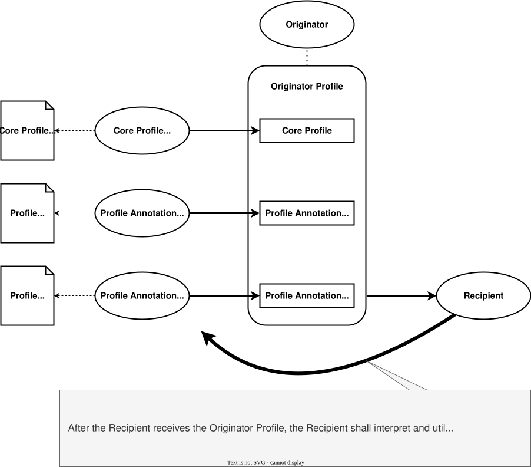
[=Core Profile=] は、次節で述べる [=Signed Data from Originator=] の 一種である。これは [=Originator=] の [=Verification Keys=] と [=Originator Profile=] の本質的な属性を載せ、[=Core Profile Issuer=] が自身の [=Core Profile Policy=] の下でこれを発行する。
[=Profile Annotation=] は、[=Profile Annotation Issuers=] が自身の 署名、すなわち [=Core Profile=] の署名とは独立した署名の下で発行する 追加の属性の集合である。 [=Profile Annotation=] もまた [=Signed Data from Originator=] に 基づく。[=Core Profile=] は、[=Profile Annotation Policy=] で定める ところに従い、複数の [=Profile Annotation Issuers=] が提供する 一つ以上の [=Profile Annotations=] へ結びつけられうる。 [=Profile Annotation=] は抽象的な概念であり、特化した種類の [=Profile Annotations=] がさまざまに存在する。これは各応用領域に 対する拡張点の一つである。
[=Signed Data from Originator=] は、[=Originator Profile Framework=] における本質的な種類の [=Signed Data=] である。これは [=Signed Data with Policy=] に基づく抽象データモデルで、[=Originator=] に由来し、[=Originator=] が 述べたポリシーに対応する特定の意図をもって署名されたものと想定する。 これは、その [=Originator=] の [=Identity=] によって、その [=Originator=] の [=Originator Profile=] へ結びつけられる。
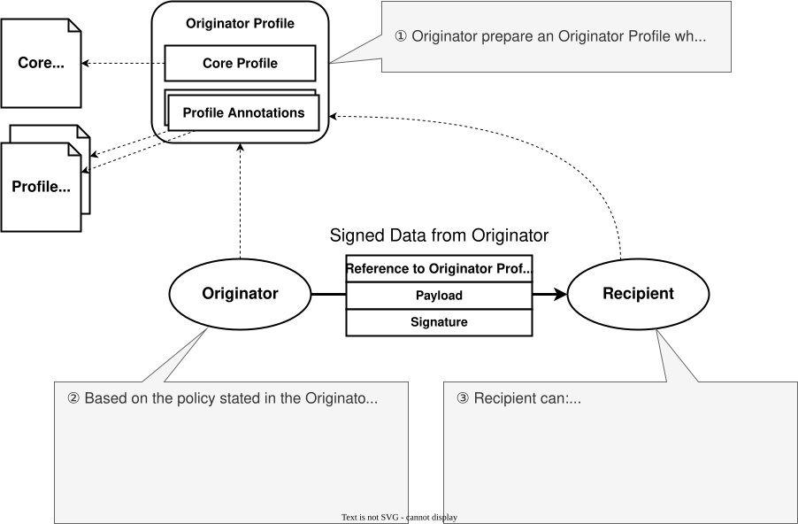
[=Content Attestation=] は [=Signed Data from Originator=] の一種で あり、[=Content=] が対応する [=Originator=] に由来し、かつ改変されて いないことを確認する。[=Content Attestation=] は、 [=Originator Profile=] の一部である [=Core Profile=] に含まれる [=Verification Key=] を用いて [=Verify|Verified=] できる。したがって [=Recipient=] は、[=Content=] の integrity を検証し、それが参照する [=Originator Profile=] を通じて、[=Originator=] が誰であり、その [=Originator=] が何を約束しているかを知ることができる。
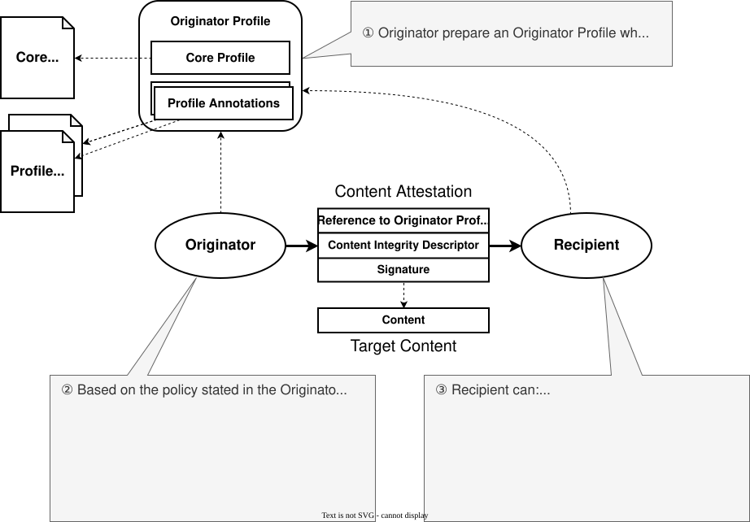
[=Content Attestation=] は [=Content=] 自体の中、またはそれと並べて 提供される。[=Content Attestation=] の payload の一部である [=Content Integrity Descriptor=] は、そのコンテンツの integrity に 関する追加の情報を与える。web メディアに対する [=Content Integrity Descriptor=] は、Web Media Use Case Specification [[OPF-WEB-MEDIA]] で記述される予定である（）。
[=Base Model=] は、すべてのユースケースが共有するエンティティ、 データモデル、プロセス、ポリシーを定める。ユースケースに固有のモデルは その上に載る。
Base Model における主要な [=Entities=] は次のとおりである。
本節では [=Base Model=] の 4 つのデータモデル、すなわち [=Signed Data from Originator=]、[=Core Profile=]、 [=Profile Annotation=]、[=Content Attestation=] を述べる。
枠組みの文書はどれも、Verifiable Credentials [[vc-data-model-2.0]] のそれのような securing mechanism によって secure された [=Signed Data=] である。枠組みがどの mechanism をどの形で用いるかは Core Specification が述べる。
[=Signed Data from Originator=] は、[=Originator Profile=] で用いる [=Signed Data=] を表す抽象データモデルである。[=Signed Data=] の authenticity と integrity を [=Verify=] するために必要な情報を すべて含む。
[=Signed Data from Originator=] は次のプロパティを含む。
上記に加えて、具体的な各データモデルには payload としてさまざまな プロパティが含まれる。
[=Core Profile=] は [=Signed Data from Originator=] の一種である。 これは [=Originator=] の [=Verification Keys=] と [=Originator Profile=] の本質的な属性を載せ、[=Core Profile Issuer=] が自身の [=Core Profile Policy=] の下でこれを発行する。
[=Core Profile=] は、[=Signed Data from Originator=] のプロパティに 加えて、次のプロパティを含む。
_originator-key._op.<issuer>）
の配下にあることを確かめ、その名前を
導出せずにそのまま引く。
名前を導出させずに運ぶのは、仕様が issuer のレコードの名前の導出の 規則を定めずに済み、issuer が自身の zone を思うように配置できるように するためである。そのような名前を [=Verifier=] が自分で組み立てると、正規化のわずかな食い違いでレコードが 見つからないことがありうる。[=Originator Key Record=] では効力のある [=Core Profile=] を失敗させ、[=Revocation Record=] では revoke された annotation を revoke されていないと読むことになる。
現在の実装の詳細は Originator Profile Blueprints: Core Profile Data Model を参照。
[=Originator Verification Keys=] は集合である。各鍵は、鍵そのものから 導かれる [=Key Identifier=] によって識別される。二つの鍵は、同じ digest アルゴリズムで計算した [=Key Identifiers=] が等しいとき同じ鍵である。 [=Core Profile Issuer=] は、次の段落で述べるとおり、この集合の鍵の [=Key Identifiers=] を、その [=Core Profile=] の [=Originator Key Record=] として DNS に 公開する。この段落で鍵のレコードというときは、その鍵を運ぶ [=Core Profile=] の [=Originator Key Record=] の中の、その鍵の レコードを指す。 [=Core Profile=] は、いったん署名されたら書き換えられない。それが運ぶ 鍵の集合は、発行のときに固定される。[=Originator=] の鍵が変わるときは、 新しい集合を運ぶ新しい [=Core Profile=] が発行され、前のものは期限が 来るか revoke されるまで有効のまま残る。[=Core Profile=] は、理由を問わず、たとえば 二つのアルゴリズムで並べて署名するために、複数の鍵を運んでよい。 ただし、鍵を置き換えるために発行する [=Core Profile=] は、置き換え られる鍵を運ばない。運べば、その鍵は新しい [=Core Profile=] が期限 切れになるか revoke されるまで使えるままになるからである。新しい鍵のレコードは、その鍵が使われる前に 公開される。置き換えられた鍵は退役（retired）し、新しい署名には 使われなくなる。そのレコードは、その鍵を運ぶ最後の [=Core Profile=] が期限切れになるか revoke されるまで、そしてその後、キャッシュと時計のずれを吸収する 短い期間が過ぎるまで DNS に残り、削除してよいのはその後である。 これにより、鍵の rollover がコンテンツを検証不能なまま残すことは 無い。鍵は、そのレコードが、それを列挙するすべての [=Originator Key Record=] から削除されたときに取り下げられる （withdrawn）。侵害された鍵は直ちに取り下げられる。
[=Core Profile Issuer=] は、自らが発行した各 [=Core Profile=] に ついて、自身の DNS 名の下で DNSSEC に保護された形で、その [=Core Profile=] の鍵のうち取り下げられていないものの [=Key Identifiers=]、すなわちその [=Core Profile=] の [=Originator Key Record=] を公開する。 [=Core Profile=] は、このレコードの名前を Originator Key Record Name として保持する。 レコードが存在することは、その [=Core Profile=] が revoke されて おらず、かつそこに [=Key Identifiers=] が列挙された鍵がその [=Core Profile=] の鍵のうち 取り下げられていないものであることを意味する。レコードが存在しない ことは、その [=Core Profile=] が revoke されたことを意味する。 [=Originator=] の登録は、issuer がその [=Originator=] の [=Originator Key Records=] を全部削除したときに終わる。 [=Core Profile=] に現れるがその [=Originator Key Record=] には無い鍵、 あるいはそのレコードにはあるが [=Core Profile=] に無い鍵は、 受け入れられない。
[=Profile Annotation=] は、[=Core Profile=] に [=Validated Attributes=] を加える抽象モデルである。 [=Profile Annotation=] は [=Signed Data from Originator=] に基づく。 [=Profile Annotation=] の各種類は、対応する [=Profile Annotation Issuer=] が、[=Core Profile=] の署名とは独立した 自身の署名の下で発行する。その issuer は [=Core Profile Issuer=] 自身であってもよく、別の者であってもよい。[=Core Profile=] は、[=Profile Annotation Policy=] で 定めるところに従い、複数の [=Profile Annotation Issuers=] が提供する 一つ以上の [=Profile Annotations=] へ結びつけられうる。
[=Profile Annotation=] は次のプロパティを含む。
_revocation._op.<issuer>）の配下にあることを
確かめ、DNSSEC の下でその名前を引く。Secure な不在の証明
（denial of existence）が得られれば、その annotation は
revoke されていない。現在の実装の詳細は Originator Profile Blueprints: Profile Annotation Data Model を参照。 [=Profile Annotation=] の具体例の一つは を参照。また、profile annotation 一般の実装に関するより多くの情報は Originator Profile Blueprints: PA Data Models を参照。
[=Content Attestation=] は [=Signed Data from Originator=] の特定の 型であり、[=Content=] をその [=Originator=] に結びつける attribution に焦点を置く。
[=Content Attestation=] は次のプロパティを含む。
[=Content Integrity Descriptor=] は、特定の型のコンテンツに対する integrity の要件を構造化して表現したものである。content type、 content locator、content hash といったメタデータを含む。現在、 [=Content Integrity Descriptor=] の型はすべて Web Media 向けに設計 されているため、それらを記述する場所は Web Media Use Case Specification [[OPF-WEB-MEDIA]] である。同仕様はまだそれらを定義して おらず、定義するまでは [[Originator Profile Blueprints]] の記述の とおりである。
現在の実装の詳細は [[Originator Profile Blueprints]]: Content Attestation Data Model を参照。また [=Content Integrity Descriptor=] の詳細は [[Originator Profile Blueprints]]: Content Integrity Descriptor を参照。
本節では [=Base Model=] の 2 つのプロセス、すなわち [=Originator Profile=] の発行と、[=Content Attestation=] を伴う [=Content=] の配信を述べ、続いてそれらのプロセスの問い合わせが何を 明かすかを述べる（）。
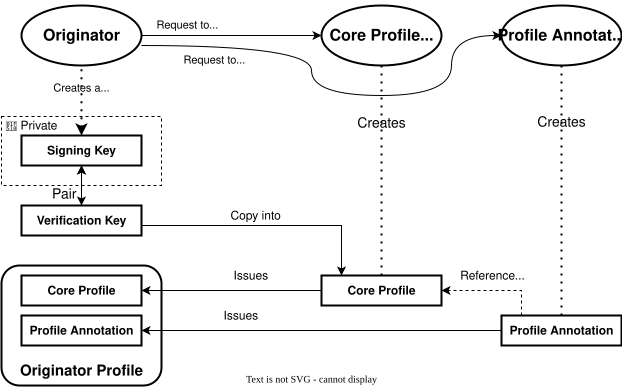
このプロセスは次の手順から成る。
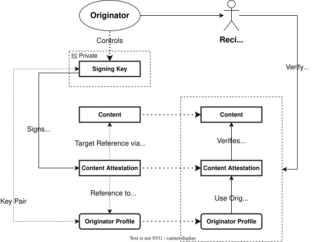
[=Originator=] が既に [=Originator Profile=] を得ているものとすると、 このプロセスは次の手順から成る。
[=Originator=] を unpinned のままにするか失敗とするかの線は、 攻撃者が何を引き起こせるかに従う。不在の証明と署名されていない zone は、経路上の攻撃者が偽造できない状態である。これに対し 名前解決の失敗は攻撃者が引き起こせるので、名前解決の失敗が [=Originator=] を unpinned のままにすることは決してない。issuer の名前では、署名されて いない応答を不在と読めば revocation が黙って無かったことになるので、 そこでは署名されていない応答も失敗である。
有効性を判断する時刻は、常に配送の経路が [=Verifier=] に与えるもので あり、署名者が書いたものではない。署名者は自分が書くものを選べるから である。その時刻がどれであっても、DNS での確認は問い合わせの時点の 状態についてのものである。DNS はその時点についてしか答えないから である。ある鍵で署名されたコンテンツは、その鍵を運ぶ [=Core Profile=] が効力を持ち、その [=Originator Key Record=] が なおその鍵を列挙している間、検証できる。コンテンツがより前の 時点で有効だったことを後から示すには、その時点で検証した当事者が 残した記録に拠ることになる。枠組みはそのような記録を定めない。
この手順には、Core Specification がはっきりと保っている切れ目が 一つある。署名の検証まで（手順 3 と 4。[=Content Attestation=] の 署名を含む）、[=Verifier=] は手元に あるものだけで作業し、何も送り出さない。[=issuer accreditations=] の連鎖も、必要な鍵も、[=Presented Identity=] もすべて手元にあり、 どの署名の検証にも DNS は要らない。最初の問い合わせが [=Verifier=] から出るのはその後であり、しかも署名を検証した文書から取った名前に ついてだけである。Core Specification がこの時点より前の問い合わせを 禁じる理由は二つある。そうしなければ偽造された文書が、偽造者の選んだ 名前を [=Verifier=] に引かせることができる。また、問い合わせそのものが、 検証が行われたことをその名前の持ち主に知らせる。切れ目を過ぎれば、 検証済みの文書から導かれる問い合わせは互いに独立で、一度に発して よい。手順の順序は依存の順序であって、時間の順序ではない。
Core Specification の worked example では、一回の検証が発する 問い合わせは、[=Verifier=] が issuer ごとにキャッシュしてよい accreditation chain の分を除いて 7 である。Core Specification の上限は、何もキャッシュしていない ときの一回の検証を 151 の問い合わせ（[=Permitted Host Record=] を 参照する場合はもう 1 つ）に、chain をキャッシュした後は 43 に抑える。
[=Verifier=] が DNS から受け取るものは、決して裸の応答ではない。 どの応答も DNSSEC の検証状態を伴い、その検証状態は [=Verifier=] が 自ら確立する。すなわち、自身の trust anchor で validate するか、resolver を認証し 応答を保護する経路で到達する validating resolver に依拠するかである。 後者の場合、その resolver が validate することを、設定または試験に よって自ら確かめておく。認証されずに届く検証の印、たとえば平文の応答の AD ビットは、何の保証も与えない。validate しない resolver からの応答は、 そもそも検証状態を持たない。Web ブラウザとメールクライアントは通常、自身では DNSSEC を validate しないので、各 [=Use Case Specification=] が、その [=Verifier=] が検証状態を得るためにこの二つの道のどちらを取るかを 定める。
Core Specification [[OPF-CORE]] の検証手順が他の当事者に届く道は 一つで、DNS の問い合わせである。ユースケースが文書の届け方によって 加えるもの、たとえば Web での well-known resource の取得は、その [=Use Case Specification=] が述べる。問い合わせが何を誰に明かすかは、 Core Specification がその privacy considerations で述べる。要点は 次のとおりである。
本節では、[=Core Profile=] と [=Profile Annotation=] の発行と管理を 律する [=Base Model=] の高水準のポリシーを論じる。これらは具体的な ポリシーではなく、個々のポリシーと手順の策定に指針を与える設計の方向性で ある。ガバナンスモデル全体の議論は で示す。
すべての issuer、すなわち [=Core Profile Issuer=]、[=Profile Annotation Issuer=]、[=Accreditation Body=]、[=Root Issuer=] の いずれも、それ自身が [=Originator=] である。issuer 自身の [=Core Profile=] はその issuer についてのものであり、issuer はその [=Core Profile=] に載る鍵で署名し、issuer が発行する文書は [=Signed Data from Originator=] である。[=Root Issuer=] 以外の issuer の立場は、issuer 自身の [=Core Profile=] に対する [=Profile Annotation=]、すなわち [=Root Issuer=] または [=Accreditation Body=] が発行する [=Issuer Accreditation=] によって 表現される。これらの accreditation は [=Accreditation Chain=] を 形づくり、その連鎖は [=Root Core Profile=]、すなわち [=Root Issuer=] （枠組みを統治する body）の self-signed な [=Core Profile=] で 終わる。
[=Verifier=] は、[=Recipient=] に代わって、自身が受け入れる [=Root Core Profiles=] を手元に保持する。これは検証ソフトウェアとともに 配布される。当初は一つである。 これらは集合として保持される。そうすれば、構造を変えずに後からもう 一つの root を追加できる。[=Root Core Profile=] は期限切れにならず、 同じ配布を通じて置き換えられる。[=Verifier=] はそれを署名の有効期間で 判定しない。DNSSEC の validator が、trust anchor の日付が過ぎても 検証を止めないのと同じである。[=Root Core Profile=] を日付で判定するとすれば、その 置き換えの配布が遅れただけで、すべての検証が一度に失敗する。
accreditation の連鎖は、その中の各 issuer の [=Core Profile=] とともに コンテンツに伴って運ばれる。[=Verifier=] はまず、受け取ったものだけを 用いて、[=Root Core Profile=] から始めて連鎖の全体を手元で検証する。DNS に 問い合わせるのは、連鎖の中での位置が検証された issuer と [=Root Issuer=] についてのみである。その目的は、その issuer の [=Issuer Key Record=] で、それが署名に用いた鍵がなお列挙されていること、 および [=Issuer Accreditation=] と連鎖中のいずれの annotation も revoke されていないことの確認である。したがって、偽造されたプロファイルが DNS への問い合わせを引き起こすことは無い。[=Verifier=] が [=Core Profile=] や [=Issuer Accreditation=] から名前を取るのは、その [=Core Profile=] や [=Issuer Accreditation=] を検証した後だけである。[=Originator=] 自身のレコードは、形の上でだけ例外である。その名前は、引くべき名前として そこに載っているのではなく、[=Core Profile=] が載せる [=Identity=] から組み立てる。それでも [=Verifier=] がそれを問い合わせる のは、やはり [=Core Profile Issuer=] の連鎖と [=Core Profile=] の署名を 検証した後だけである。[=Verifier=] は、検証した連鎖を issuer 単位で cache してよい。その連鎖は、問い合わせた DNS レコードの寿命を超えて 保持せず、連鎖中で [=Root Core Profile=] 以外のいずれの [=Core Profile=] や [=Issuer Accreditation=] の署名の有効期間も超えて 保持しない。
[=Core Profile=] の発行に際して、[=Core Profile Issuer=] は 必要に応じて [=Originator=] の identity と [=Attributes=] を [=Validates=] する。[=Core Profile Issuer=] は、[=Core Profile=] が 定められたポリシーと手順に従って発行されることを保証する責任を負う。
[=Core Profile Issuer=] が [=Core Profile=] を発行するために必要な 手順には、次のものが含まれる。
[=Core Profile Issuer=] は、発行したすべての [=Core Profiles=] と、 それに結びついた [=Originators=] の記録を保持する。 この記録には、実施した validation と評価のプロセスの詳細、および 裏づけとなる文書が含まれる。
このポリシーは X.509 に基づく Certificate Authority (CA) の ポリシーと似ており、そのエコシステムの経験から学べることは多い。 ただし [=Core Profile=] と [=Profile Annotations=] が分解されている という性質のため、各構成要素に固有の側面に取り組むための追加の考慮が 必要になることがある。
OP-CIP は現在、他のポリシーとあわせて、初期の配備に向けた最初の [=Core Profile Policy=] を策定している。
OP-CIP は現在、[=Core Profile=] を発行する条件として、[=Originator=] が [[The Originator Profile Charter]] にコミットすることを求めている。 すべての [=Originator=] が一つの原則と実践の集合を守るようにするためで ある。この条件は初期配備の段階のものであり、エコシステムの成熟に ともなって変わりうる。
[=Profile Annotation=] を発行するとき、 [=Profile Annotation Issuer=] はまず [=Originator=] の identity を [=Validates=] し、続いてその annotation が載せる個々の属性を [=Validates=] する。[=Profile Annotation Issuer=] は、 [=Profile Annotation=] が定められたポリシーと手順に従って発行される ことを保証する責任を負う。
ポリシーの詳細は、個々のユースケースと領域の要件に依存する。したがって [=Profile Annotation=] はそれらの目的に特化され、特化した annotation に 対するポリシーを用意する必要がある。
OP-CIP は現在、他のポリシーとあわせて、初期の配備に向けた最初の [=Profile Annotation Policy=] を策定している。
[=Jurisdiction Specific Models=] は、さまざまな法域それぞれの異なる 必要に応える。何よりも、これらのモデルは、法域ごとにエンティティの モデルがどう違うか（たとえば法人がどう定義されるか。ただしそれに 限らない）を捉える必要がある。[=Jurisdiction Specific Models=] は、 特定の法域に固有の追加の属性や validation の仕組みを定義することがある。
[=Originator Profile Framework=] は世界での配備を想定して設計しているが、 まず日本国内で枠組みを配備するため、現在は日本に固有の要件に焦点を置いて いる。ただし将来は、他の法域に対しても同様のモデルを導入すると見込んで いる。
[=Organization Profile=] は [=Profile Annotation=] の具体的な型の一つで あり、[=Originator=] の背後にある組織に関する validate された情報を 与える。
異なる法域にまたがって組織の主要な属性を表現するには抽象データモデルが 必要であると認識している。ただしこのモデルの要件については、関係する すべての側面を捉えられるように、法域間でさらなる分析を要する。
このモデルには、次のような属性が含まれうる。
これらの属性、とくに登記の詳細は、各法域に固有の要件に従って法域ごとに かなり異なる。また、当該法域の外の読者に向けた多言語対応も必要で ある。
日本では、組織が存在することを validate するとは、通常、関係する 行政機関におけるその組織の登記を確かめることである。そのような validation には、 その組織の登記番号、税務上の識別番号、その他の公的な文書の確認が 含まれうる（注: 登記番号と税務上の識別番号は別のものである）。さらに 組織は、国内の 事業所の住所や連絡先情報など、日本における物理的な存在の証明を求め られる。
会社の登記番号がいったん validate され、検証可能な形で運ばれれば、 関係する行政機関からさらに詳細な情報を取得する手段にもなる。
現在の実装の詳細は [[Originator Profile Blueprints]]: Existence Certificate in Japan を参照。
[=Web Media Specific Model=] は、web ページとして配信される [=Content=] に [=Base Model=] を当てはめる。
[=Web Media Specific Model=] は、 の [=Entities=] に [=Entity=] を加えない。
次の図は、web ページとして配信される [=Content=] を示す。その後の 一覧は、Web Media Use Case Specification が述べるところに従い、 このモデルを 5 つの軸で要約する。
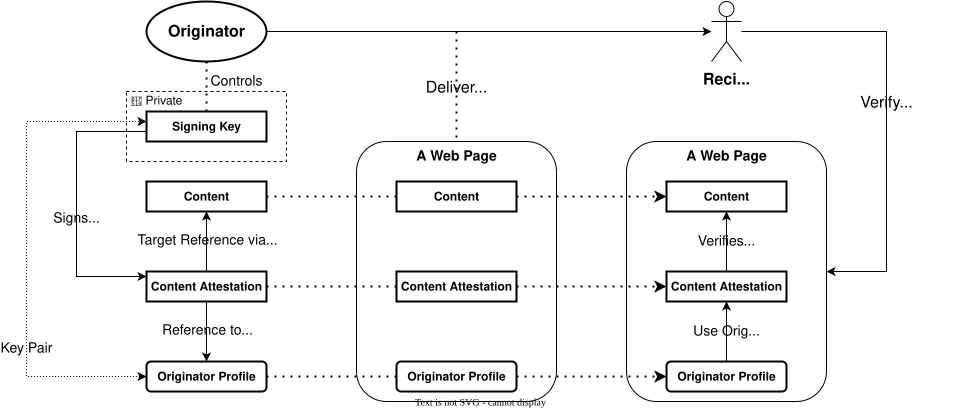
allowedUrl プロパティの
挙げるものであることを確かめる。[=Verifier=] は、[=Website Profile=]
だけを根拠に location を受け入れない。host の規則がなければ、
誤発行された [=Core Profile=] 一つで、任意の website を当該
[=Originator=] のものとして提示できてしまう。
これらはそれぞれ Web Media Use Case Specification [[OPF-WEB-MEDIA]] が定める。
本節では Email Specific Model を述べる。これは S/MIME [[RFC8551]] で 署名した電子メールに [=Base Model=] を適用したものである。このモデルは [=Base Model=] の DNS 設計に何も加えない。加えるのは、送信ドメインと [=Originator=] の間の結びつけ、およびメッセージをどこでいつ検証するかの 規則である。
[=Originator=] はメッセージを送る組織である。[=Verifier=] は メールクライアントである。受信側のメールサーバ（MTA または MDA）による 受信時の検証は、この版の Email Use Case Specification では定めず、 将来の課題とする。[=Verifier=] の定義が例に挙げる受信側のメール サーバは、この置き場所のことである。 メールクライアントは DMARC [[RFC9989]] を strict alignment の下で自身で評価する。自身の受信サーバが DMARC の失敗を記録している場合、 クライアントはそれを尊重し、そこに記録された成功は自身の評価の代わりに ならない。
次の一覧は、Email Use Case Specification が述べるところに従い、 このモデルを 5 つの軸で要約する。
[=Originator Profile=] と [=issuer accreditations=] の連鎖は、 署名される MIME 構造の一部として運ばれ、S/MIME の署名が本文と あわせてそれを覆う。メッセージは [=Content Attestation=] を運ばない。 Email Use Case Specification の述べるとおり、本文と profile の部分を 覆う S/MIME の署名がその役を務め、署名鍵は [=Core Profile=] にある [=Originator Verification Keys=] の一つに対応する。
署名の検証と signer の X.509 certificate の certificate path の validation は、 S/MIME の定めるとおり S/MIME の実装が行う。枠組みが加えるのは、 署名鍵が [=Originator=] のものであることの確認である。 [=Verifier=] はその certificate が運ぶ鍵を [=Key Identifier=] で [=Core Profile=] と照合し、その鍵を通じて [=Originator Profile=]、 すなわち受信者に示される [=Identity=] と [=Validated Attributes=] を 確かめる。
d= のドメインが
From ドメインである DKIM 署名によって DMARC の下で整合していない
メッセージは評価されない。
none（失敗
とは区別される）、pass、fail のいずれかであり、メールクライアントは
その区別を保って結果を提示する。受信側のメールサーバによる受信時の
検証とその結果の記録は、将来の課題とする。枠組みに対応しないクライアントはプロファイルの部分を
添付として扱い、S/MIME の署名はそれでも検証される。
これらはそれぞれ Email Use Case Specification [[OPF-EMAIL]] が 定める。
データモデルのアーキテクチャ設計により、[=Originator Profile Framework=] は さまざまなユースケースと stakeholder の要件を受け止める柔軟な ガバナンスモデルを提供できる。言い換えれば、 [=Originator Profile Framework=] は、コンテンツのエコシステムとその先に 関わるさまざまな stakeholder の多様な必要を支えるように設計されている。
この枠組みでは、[=Originator=] に関する情報、すなわちその [=Verification Keys=] と [=Validated Attributes=] が、後から柔軟に 組み合わせられるように、[=Core Profile=] と複数の [=Profile Annotations=] へ解かれている。[=Validated Attributes=] の それぞれは、個々のポリシーへ結びつけられうる。これらのポリシーと発行の運用は、 枠組みを統治する body である [=Root Issuers=] が適切に統治する。
以降の節ではまず一般的なガバナンスモデルを紹介し、次にガバナンスモデルの 例として X.509 PKI に基づくシステムを示す。続いて、日本で計画されている [=Originator Profile Framework=] の最小のガバナンスモデルを含む、 さまざまなユースケースに対するガバナンスモデルの例を示す。さらに議論を 他の法域に対するガバナンスモデルへ、そして最後に世界のコミュニティに対する ものへと広げる。これらの拡張はいずれも、システムを実効的に統治するために より多くの stakeholder の関与を要する。
技術的な設計は、枠組みの運用に要件を課す。その要件は、枠組みを運用する 当事者が満たすことを求められ、各 [=Root Issuer=] が課すものである。 すなわち、その [=Root Issuer=] の [=Root Core Profiles=] をどのように [=Verifiers=] へ配布し置き換えるか。[=Core Profile Issuer=] が自身の [=Originators=] の [=Originator Key Records=] をどのように運用するか （危殆化した鍵を取り下げるまでの有界の遅延を含む）。 [=Profile Annotation=] の issuer が自身の [=Revocation Records=] を どのように運用するか。そして、 検証手順を将来簡略化しうるための条件として、issuer の [=Issuer Accreditation=] の revocation と、その issuer 自身の [=Core Profile=] の issuer が公開する、その issuer 自身の [=Originator Key Records=] の削除が同時に効力を生じること。これらの要件は Operational Governance Requirements が述べ、その遅延のような値と、要件を満たす手順は Operations の文書が持つ（）。どちらの文書も 本文書と共には公開されない。公開されるまでは、推奨値のうちユースケースに 関わるものはその [=Use Case Specification=] が述べ、issuer の zone に 関わるものは、定めたものがある場合、レコードを定める Internet-Draft が 述べる。
下の図は、[[Trusted Web White Paper 3.0]] の議論から抽出した、大きく 単純化した一般的なガバナンスモデルを示す。（注: 同白書で論じられている ガバナンスモデルは、本文書の著者の一人による論文 [[A Study on Governance funded by JFSA]] における議論に基づく。同論文は [[ICANN]] のマルチ ステークホルダモデルの分析を含む。）
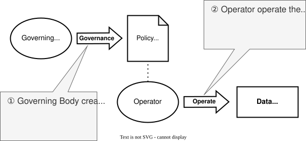
デジタルのエコシステムにおけるガバナンスは、通常 "Data Under Governance" を中心に回る。"Governing Body" が "Operator" を統制する。 "Operator" が "Data Under Governance" を管理する。"Operator" は、運用上の ポリシーを含む "Policy" の下で、このデータの管理と保護を監督する責任を 負う。"Operator" はポリシーの下で忠実に運用し、"Governing Body" は "Policy" を通じて "Data Under Governance" を統制できる。
以下は、前節で論じた一般的なモデルに基づく、X.509 PKI システムに対する ガバナンスモデルを単純化して表したものである。
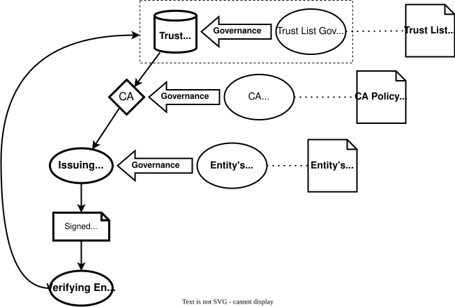
この図は X.509 Public Key Infrastructure (PKI) システムの単純化した ガバナンス構造を示す。階層の最上位にあるのは governing body であり、 PKI エコシステム全体を覆うポリシーと信頼の枠組みを定める。trust list は governing body とともに、それに依拠するコミュニティにとっての root of trust である。
governing body の下で、Certificate Authority (CA) がこれらのポリシーに 従って digital certificate を発行し管理する責任を負う。CA は信頼された 第三者として働き、certificate を要求するエンティティの identity を validate し、ガバナンス上の要件への適合を確かめる。ユーザ、 アプリケーション、組織などの relying party は、identity を認証し通信を 保護するために、CA の信頼性と、CA が発行する certificate の integrity に 依存する。この図は、これらのエンティティ間における信頼の流れ、ポリシーの 強制、運用上の責任を示し、X.509 PKI の環境の中でガバナンスがどのように 保たれ、信頼がどのように伝播するかを明らかにする。
図の中の検証を行うエンティティ（本文書の [=Verifier=] にあたる）は、オペレーティングシステムまたは アプリケーションを介して "Trust List" を参照する。trust list は信頼された root CA のリストを含む。trust list は通常、オペレーティングシステムまたは アプリケーションのベンダが管理し、ソフトウェア更新の仕組みを通じて 更新される。
検証を行うエンティティの観点からは、trust list は通常見えない。 オペレーティングシステムやアプリケーションが、そのリストにある root CA を自動的に信頼する。そして、ガバナンスが信頼のツリー全体に 結びついているため、検証を行うエンティティが依拠できるポリシーは、 trust list を維持する body と各 CA が定めたものだけである。
以下は、bootstrap 段階において日本国内のメディアに向けて計画されている Originator Profile のガバナンスモデルを単純化して表したものである。
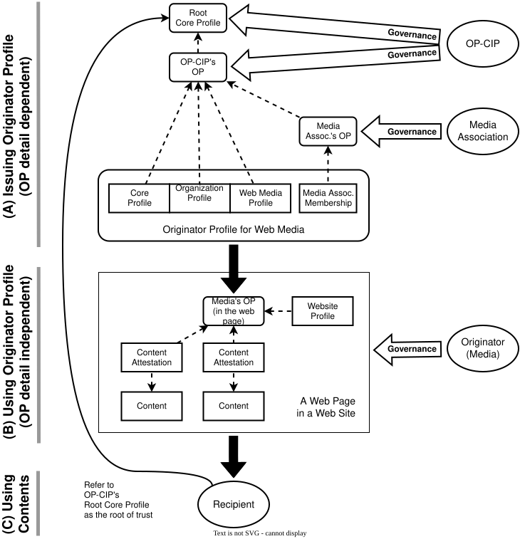
まず Web Media のエコシステムにおいて、[=Originator Profile=] は 3 つの [=Validated Attributes=] の集合、すなわち [=Core Profile=]、 [=Organization Profile=]、そして場合により 少なくとも一つの "Media Association's Membership" から構成される。 Web Media の use case では、[=Originator Profile=] は [=Web Media Profile=] も含む。
日本における bootstrap 段階では、[=Core Profile=]、 [=Organization Profile=]、[=Web Media Profile=] を OP-CIP が発行する。
"Media Association's Membership" については、日本のメディア団体の一つが 発行する形を計画している。"Media Association's Membership" の実際の発行は、 メディア団体に代わって OP-CIP が運用する可能性がある。その場合も、 membership の validation はメディア団体が統制し、その責任を負う。
[=Originator=]（メディア）は、[=Core Profile Policy=] と [=Web Media Specific Policy=] を満たすために必要な情報を提供して、 OP-CIP へ [=Core Profile=] と [=Web Media Profile=] を要求する。OP-CIP は その情報を validate し、[=Originator=] へプロファイルを発行する。OP-CIP は また、その組織の日本における存在を validate することで [=Organization Profile=] を発行する。
[=Verifier=] は、自身が保持する [=Root Core Profile=]（bootstrap 段階では OP-CIP のもの）に照らして、[=Originator=] の [=Originator Profile=] を検証する。OP-CIP は [=Root Issuer=] であり、 [=Root Core Profile=] を発行し、[=Issuer Accreditation=] を持たずに [=Originators=] の [=Core Profiles=] を発行する。続いて [=Verifier=] は、 [=Originator=] の [=Core Profile=] にある [=Verification Key=] を用いて [=Content Attestation=] を検証する。
現在のブラウザ拡張の実装は、OP-CIP の [=Root Core Profile=] を拡張自体の 中に埋め込んでいる。したがってこの拡張は、外部の trust list を一切 参照せずに、OP-CIP が発行した [=Originator Profile=] を検証できる。 この段階では、埋め込まれた [=Root Core Profile=] が、他の仕組みで trust list が果たす役を、項目が一つだけの形で果たす。root の集合を 広げていくためのガバナンスは が述べる。
以降の節の図では、簡潔にするため、ガバナンスモデルのうち発行の部分のみを 示す。これは で "(A)" と 記した部分である。
以下は、他の法域での利用に向けて計画されている Originator Profile の ガバナンスモデルを単純化して表したものである。
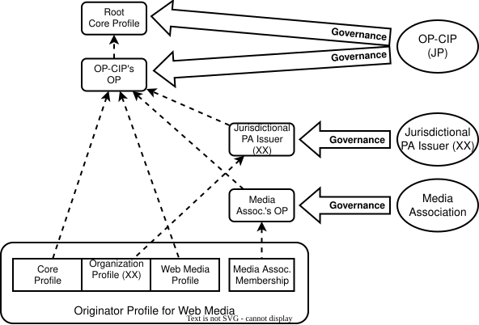
このモデルでは、日本に対するモデルと同様に、[=Core Profile=] は OP-CIP が発行する。日本向けの [=Organization Profile=] は OP-CIP が 発行し、法域 XX 向けに localize された [=Organization Profile=] は、 OP-CIP が recognize した法域 XX の [=Profile Annotation Issuer=] が 発行する。この現地の [=Profile Annotation Issuer=] は、その法域における組織の存在に固有の 属性を validate し、現地の規制と基準への適合を確かめる責任を負う。
現地の [=Profile Annotation Issuer=] を OP-CIP が recognize するための 仕組みを確立する必要がある。これは公式な recognition のプロセスを含みうる。 すなわち OP-CIP が、現地の issuer に法域向けに localize された [=Organization Profiles=] を発行する権限を与える前に、その issuer の ポリシー、手順、信頼性を評価する。OP-CIP は、現地の [=Profile Annotation Issuer=] へ [=Issuer Accreditation=] を発行する ことで、その issuer を accredit してよい。
以下は、世界のコミュニティに向けて計画されている Originator Profile の ガバナンスモデルを単純化して表したものである。
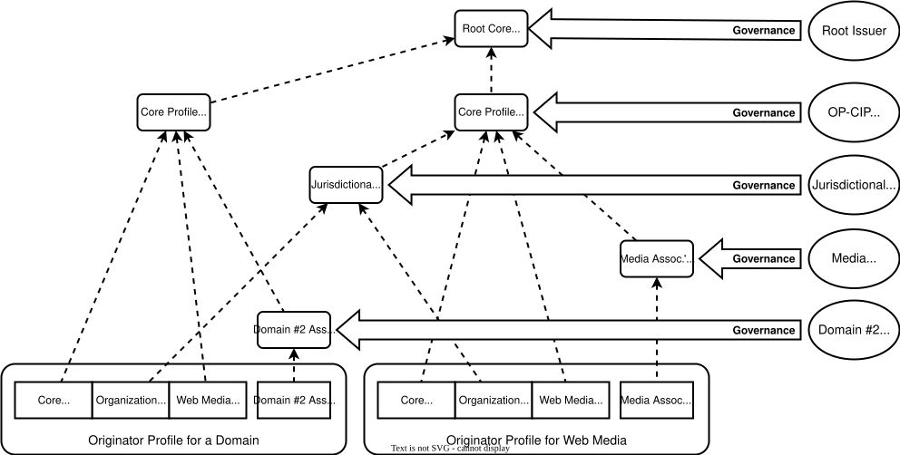
このモデルでは複数の [=Core Profile Issuers=] が存在し、それぞれが [=Originators=] へ [=Core Profiles=] を発行する責任を負い、自身の ガバナンスの下で運用する。すべての [=Core Profile Issuers=] は、 直接または [=Accreditation Body=] を介して、枠組みを統治する body、 すなわち [=Root Issuer=] によって accredit される。その [=Root Core Profile=] は self-signed な [=Core Profile=] である。 [=Core Profile Issuers=] は、自身のガバナンスとポリシーに基づいて、 [=Web Media Profile=] を、また [=Profile Annotation Issuers=] として [=Profile Annotations=] を発行してもよい。
このモデルを確立することにより、中央集権的なガバナンスを避け、 多様なガバナンスを実現できる。[=Root Issuer=] のガバナンスは、[[ICANN]] の マルチステークホルダガバナンスモデルと同様に、さまざまな stakeholder の 参加と多様な視点の取り込みを許す包摂的なものとすることを意図している。
そのようなマルチステークホルダガバナンスモデルを確立し運用するには、 綿密な計画、継続的な協働、そしてすべての参加者による透明性と説明責任への コミットメントを要する。ガバナンスの枠組みが実効的に機能するようにする ため、役割、責任、意思決定のプロセスについて共通の理解を作り上げることが 不可欠である。[[ICANN]] の経験から学べることは多い。本文書の著者の一人 による論文 [[A Study on Governance funded by JFSA]] は、マルチステーク ホルダガバナンスモデルにまつわる課題と機会についていくらかの洞察を 与えうるもので、この文脈に関心を持つ新たな参加者にとって有用である。
本節はフィードバックを得るに応じて更新する。
本文書の後の版は [=Originator Profile=] と [=Content Attestation=] を 伴う。この版は伴わない。
標準化の作業には、常に用語の課題がある。
いくつかの用語が異なる意味で使われていること、また特定の stakeholder に とって直観に反しうることを理解している。次の用語はとくに注意を要する。
で概念を導入する際には慎重を期し、補足の 注を付した。これらの用語に限らず、文書全体についてフィードバックを いただきたい。
日本では "verify" と "validate" がしばしばどちらも「検証」（ken-shō）と 訳され、互換に用いられており、このデジタル署名の応用領域において誤解を 招いている。したがって本文書の機械翻訳は、本文書が拠って立つこの 2 語の 区別を反映できない。
また、現在利用できる文書の中で用いられている用語には、なお不整合が残る ことに留意されたい。[[Originator Profile Blueprints]] は文書群の内部では おおむね整合しているが、用語の一部は本 Architectural Overview 文書とは わずかに異なる用法になっている。[[Originator Profile Blueprints]] を [=Originator Profile Framework=] の文書群へ統合する過程で、これらの 不整合に対処する。
[[vc-data-model-2.0]] の利用には、国際化と多言語に関する課題がいくつか ある。[=Originator Profile Framework=] のデータモデルの現在の版は、 signed data のオブジェクトごとに単一の言語を用いている。この判断は、現在の JSON-LD に基づく 多言語の構造が verifier 側で解釈するには複雑であるという事実に由来する。 私たちの場合、verifier はブラウザの中にある。そのコストは無視できない。 そのため現在は、多言語の文字列を含みうる [=Profile Annotation=] モデル 全体に一つの言語を適用している。同じ型の [=Profile Annotations=] を 異なる言語で複数提供することは可能だが、現在のブラウザ拡張はまだこれに 対応していない。そのような annotation の配り方は [[Originator Profile Blueprints]] が記述している。言語だけが異なる 文書群を、[=Verifier=] がそのうち一つを用いる一つの文書とみるか、 複数の文書とみるかは、Web Media Use Case Specification [[OPF-WEB-MEDIA]] の未決の問いである。
また、Web Media のユースケースのコンテンツは通常ページごとに一つの言語で あるため広範な多言語対応を要しないが、[=Originator Profile=] の中の情報は コンテンツにかかわらず多言語対応を要することに留意されたい。
もう一つの課題は、含める言語の選定である。日本語の場合は日本語と英語の 双方を含めることが必要だが、他の言語については明らかでない。
この課題に取り組むためさまざまな選択肢を検討しており、私たちのユース ケースにより適した別の方式を提案する可能性がある。
データモデルの初期の版は [=Core Profile=] に単一の verification key を 埋め込み、鍵の発見の仕組みを持たなかった。これは事実上、鍵の rollover を 排除していた。現在の枠組みは、[=Core Profile=] の中の鍵を、その [=Core Profile=] の発行のときに固定される集合として扱い、各鍵をその [=Key Identifier=] で識別する。鍵を変えるには新しい [=Core Profile=] を 発行する。[=Core Profile Issuer=] は、DNSSEC の下で DNS に、自身が発行した [=Core Profile=] ごとに、その [=Core Profile=] の鍵のうち取り下げられていないものの [=Key Identifiers=] を公開する（ と を参照）。
枠組みが DNS を、DNSSEC の下で用いるのは、三つの狙いのためである。 一つは、下の一覧が詳しく述べるとおり、鍵の交換とその revocation の 管理の障壁を下げること。二つめは、各 issuer が自身の名前の下、自身の zone で公開できるようにし、ガバナンスがそう意図されているように、公開も issuer の間に分散させること（）。三つめは、送信者が既に鍵とポリシーを DNS に公開している電子メールと整合させることである。DNSSEC が要るのは issuer の側であり、そこでは当事者は少なく、それを運用できる。 [=Base Model=] は [=Originator=] にそれを求めず、[=Recipient=] は それを運用しない。自身では validate しない [=Verifier=] は、各 [=Use Case Specification=] が述べるとおり、認証された経路で到達する validating resolver に依拠する（）。zone の署名を求めるのは issuer に対してであり、[=Originator=] に対しては、電子メールのように ユースケースが求める場合に限られる。
DNSSEC を選んだのは、追加の仕掛けなしに次のものが得られるためである。
レコードは [=Originator=] ではなく issuer 自身の DNS 名の下で公開する。 こうすれば [=Originator=] は、参加するために DNSSEC を運用する必要が ない。枠組みは [=Originator=] の zone に 2 つのレコードを定める。 すなわち、[=Originator=] が自身のために発行してよい [=Core Profile Issuers=] を名指しするか、自身が [=Originator Profile=] を持たないことを宣言する [=Issuer Pinning Record=] と、 [=Permitted Host Record=] である。[=Originator Profile=] を持たないと 宣言することは、たとえば鍵が漏れたときに、[=Originator=] が [=Core Profile Issuer=] の 助けなしに自身の profile を止める一つの手段であり、その宣言はそれらを すべて一度に止める。ユースケースが [=Originator=] に それらの公開を求めるかどうか、またその [=Verifier=] がそれらを参照 するかどうかは、そのユースケースの [=Use Case Specification=] が 述べる。zone が 署名されている [=Originator=] には、[=Issuer Pinning Record=] を 公開することを勧める。
DNS が運ぶのは、原則として、鍵そのものではなく鍵の [=Key Identifiers=] であり、これにより鍵のアルゴリズムにかかわらず レコードは小さく保たれる。鍵を運ぶこの record type は、digest の 代わりに public key 全体を運ぶ形（Matching Type 0）も許している。 [=Originator Profile Framework=] はその形を使わない。issuer はそのような レコードを公開せず、[=Verifier=] は出会ったものを無視する。鍵そのものは常に [=Core Profile=] から得る。この record type は、枠組みから独立して IANA に 登録され DNS ソフトウェアが対応できるよう、Internet-Draft draft-shigeya-dns-opkey で定義する。
枠組みは次の道を採らない。この段落はその理由を記録する。 X.509 [[X509V3]] certificate を [=Core Profile=] の中に埋め込み、その [=Core Profile=] に複数の [=Profile Annotations=] で注釈することは できる。しかし X.509 certificate を用いると、鍵の rollover の手順が複雑になるだけでなく、 DNSSEC の利点、とくにオーバヘッドの小さい revocation も失われる。
[=Core Profile=] は 1 年程度の署名の有効期間を持ちうる。その revoke は、 その期間が終わるのを待たないからである。[=Verifier=] は検証のたびに issuer のレコードを参照し、validate できない応答を失敗として扱う。 したがって、取り下げられた鍵や revoke された [=Core Profile=] は、 その [=Originator Key Record=] の time to live の範囲で見えるように なる。期間の短縮は、 relying party が当てにできない revocation の確認を Web PKI が補う方法で ある。枠組みはそのような補いを必要としない。
[=Originator=] の [=Identity=] は DNS 名なので、ドメイン名が人手に 渡るとき、失効するとき、乗っ取られるときには、それに従う。名前の新しい 保有者は、前の保有者の [=Core Profile=] の鍵を持たないので、それで 署名することはできない。一方、前の保有者は、その [=Core Profile=] が 期限切れになるか revoke されるまで、その鍵を持ち続ける。その鍵でなお できることは、各ユースケースの binding によって限られる。コンテンツが その [=Originator=] のものとして数えられるのは、[=Presented Identity=]、 すなわちページの origin、または From ヘッダフィールドのドメインが、 その名前であるかその下にある場合に限られ、前の保有者は もはやそれを制御していない。残るのは [=Presented Identity=] なしに 示されるコンテンツ、たとえばアーカイブから読まれるコンテンツであり、 Core Specification の security considerations がこれを pinning の下で 扱う。ユースケースが 参照する場合、新しい保有者は、その名前の zone に、他の [=Core Profile Issuers=] を名指しするか、[=Originator=] が [=Originator Profile=] を持たないことを宣言する [=Issuer Pinning Record=] を公開できる。また [=Core Profile Issuer=] は、その [=Originator=] がもはや名前を保有していない [=Core Profile=] を revoke できる。[=Originator=] がなお自身の名前を保有していることを issuer がどう確かめるかは、その issuer の [=Core Profile Policy=] の 事柄である。
[=Originator Profile=] がどのように [=Recipient=] に届くかは、枠組み 全体ではなく各ユースケースが定める。現在のユースケースでは、 [=Core Profile=]、[=Profile Annotations=]、[=issuer accreditations=] の 連鎖が [=Content=] とともに運ばれる。すなわち web ではページの中と そのページの origin の well-known resource で、電子メールでは署名された メッセージの一部としてである。DNS はそれらの配布には用いない。 DNS の役割は、[=Verifier=] が既に保持しているものがなお現行であるかを 述べることである。すなわち、鍵がなお有効か、[=Core Profile=] がなお有効か、annotation が なお revoke されていないかである。
文書をコンテンツとともに運ぶことは、issuer に見えるものを resolver が 転送するものにとどめることになる。文書をその issuer から HTTPS で 取得すれば、各 [=Recipient=] がその issuer に見えてしまう。
あるユースケースは将来、コンテンツとともに運ばれるものの一部、たとえば [=issuer accreditations=] の連鎖を、コンテンツの一件ごとに運ぶ代わりに issuer の DNS や別の経路から取得することを選んでもよい。そのような変更は 経路を取り除くのではなく加えるものである。[=Verifier=] は受け取った もののうち自身が必要としない部分を無視するので、その追加が既存の [=Verifiers=] に影響することはない。
[=Originator Profile Framework=] の主要な特徴の一つは拡張性であり、 これは [=Profile Annotations=] の利用によって実現される。 [=Profile Annotation=] はそれぞれ、個々のユースケースと要件を受け止める ように定義でき、柔軟で適応しやすい枠組みを可能にする。以下は [=Profile Annotation=] のありうる用途の一部である。
ある種の membership の annotation は、[=Profile Annotation=] の拡張性の 一例である。
興味深いことに、特定の [=Profile Annotation Issuer=] が発行した [=Profile Annotation=] が存在すること自体が、[=Profile Annotation Policy=] の下での追加の [=Validated Attributes=] がなくても、当該 [=Profile Annotation Issuer=] の意図を示すのに十分に有用である。 たとえばメディア団体がメディア企業へ membership の [=Profile Annotation=] を発行した場合、その [=Profile Annotation=] が 追加の [=Validated Attributes=] を含まなくても、membership の [=Profile Annotation=] が存在すること自体が、そのメディア企業が 当該団体の会員であることを示すのに十分である。
この取り方により、[=Profile Annotation=] の中に大量のデータを置く 必要なく、[=Originator=] の所属や会員資格を軽量かつ効率的に認識できる。
この考え方は、特定の基準を満たす [=Originators=] の一種のリストを、 データベースとしてのリストを作り管理することなく作る必要がある さまざまなユースケースへ適用できる。
語彙は [=Profile Annotations=] の意味を定めるうえで決定的な役割を 果たす。語彙は個々の概念を表現し伝達する標準化された手段を与え、 異なるシステムが [=Profile Annotation=] に含まれる情報を理解し処理する ことを容易にする。既存の語彙を活用し、あるいは新しい語彙を作ることに より、[=Profile Annotations=] の表現力と相互運用性を高められる。
既存の語彙とスキーマは複数存在し、[=Profile Annotations=] に活用できる。 これらの語彙は、[=Originator=] やその属性のさまざまな側面を記述するのに 使える豊富な用語と定義の集合を与える。
本節では、私たちが現在取り組もうとしているユースケースのいくつかを紹介 する。各ユースケースの叙述の後に、そのユースケースに対する要件の一覧を 置く。本節は W3C’s Verifiable Credentials Use Cases の様式に緩やかに従う。
ユースケースは 3 つの分類に分けられる。Web Media のユースケース、地方 自治体のユースケース、web サービスサイトのユースケースである。
Web Media のユースケースは、新聞社のサイトや放送局のサイトのような メディアをユーザが読む場面に焦点を置く。
Paul は熱心なニュース記事の読者で、たいていは好みの新聞社の website で その記事を読む。新聞社の website は個々の記事だけでなく全体として 編まれているため、Paul がその時々に読みたい記事へ容易にたどり着ける。 そのサイトが OP を活用していれば、Paul が常に訪れている正しいサイトに アクセスしていることを容易に確認でき、偽のサイトへ誤って接続する危険が 下がる。これはありがたいことである。最近、ある新聞社が編集方針の変更を 発表し、Paul はその新聞社の現在の方針を確かめたくなった。OP があれば、 その新聞社の行動規範に関する情報へ容易かつ確実にたどり着ける。OP を通じて提供されるメディアの運用ガイドラインは、サイト にかかわらず同じインタフェースを通じて参照できるため、情報へのアクセスと、 必要なら関係者への連絡が容易である。
要件:
Nancy はコンピュータを使う時間をできるだけ短くしたいユーザである。 ニュースは最低限得られれば十分だと考えており、主に慣れ親しんだ ポータルサイトで提供されるニュース記事に目を通す。今日、そのポータル サイトで目を引く記事に行き当たったが、あまりによく書けているので疑わしく 思い、その記事がどこから来たのかを知りたくなった。その記事には OP が 付いていたので、記事の出所は明らかだった。さらにその記事は要約だったので、 全文を読むために出所のサイトを訪れた。要約には元記事へのリンクが含まれ、 それは Originator Profile Framework によって保護されているため、安心してそのリンクを クリックして記事にたどり着ける。彼女は、元記事と要約の関係、要約に責任を 負う者、そして元記事に許可なく改変されたリンクが含まれていないかを確認 できる。
要件:
Robert は検索エンジンが登場する前からインターネットを使ってきた、 高い技能を持つ PC の達人である。マウスに頼るよりキーボードだけで コンピュータを操作するほうが快適だと感じている。website を閲覧するとき、 訪れたいサイトを指定するために URL バーへ直接 URL を入力する。ほとんどの サイトは頻繁に訪れるため、ブラウザが URL を自動補完し、目的の website に たどり着ける。しかし、ときおり入力を誤る。犯罪者は、よく知られたサイトと ありがちな打ち間違い一つだけ異なる website 名を登録することがある。ある日 Robert は誤ってそのようなサイトを訪れてしまった。幸い Robert はブラウザに Originator Profile のブラウザ拡張を入れていたので、そのサイトに OP が 付いていないことに気づいた。 Robert が普段使う website には OP があるため、彼はその異常に気づき、 問題を避けられた。
要件:
本節では、Originator Profile Framework を活用する地方自治体のサイトのさまざまな ユースケースを述べる。
Ken が働く村を大地震が襲った。地震の直後から、村を津波が襲ったと主張する 動画がソーシャルメディアで拡散し始めた。しかしこれらの動画は、実際には 別の日に別の場所で撮られたものだった。そして実際には、Ken の村を津波が 襲ってはいなかった。
それでも役場には、津波についてのソーシャルメディアの投稿を見た人々から 数多くの問い合わせが寄せられた。「ソーシャルメディアで A 地点を津波が 襲い住民が取り残されていると伝えられている。救助隊を出してほしい」と いった訴えは、緊急時における多くの種類の業務に支障をもたらす。
Ken は役場の website に次のような案内を掲げた。「ソーシャルメディアで 村の災害の映像を見たら、まずそのコンテンツの OP を確かめてください。 OP があれば、その情報が originator によって責任をもって投稿されたことを 意味します。」その結果、混乱は次第に収まった。
要件:
本節では、Originator Profile Framework を活用する web サービスサイトのさまざまな ユースケースを述べる。
Rodney が使っているクレジットカード会社 Japan Express は、オンライン サービスを提供している。彼は普段、スマートフォンのアプリを使って自身の 口座情報に安全にアクセスしている。Rodney は請求情報をダウンロードする ために、月に一度 Japan Express の website にアクセスする。Japan Express は [=Originator Profile=] を完全に採用している。Japan Express の website に アクセスすると、Rodney はそのサイトが日本の会社によって運営されている ことを示すアイコンと、クレジットカードサービスを提供していることを示す アイコンの双方を確認できる。これにより Rodney がフィッシングサイトへ 誘導されていないことが確かめられ、安心して取引を行える。
要件:
本節では、ユースケースから抽出した [=Originator Profile Framework=] に 対する要件を述べる。詳細は付録 を参照。
次の [=Entities=] が、直接に、または issuer の背後で、ユースケースに 関わる（）。
ユースケースから次の要件を特定した。